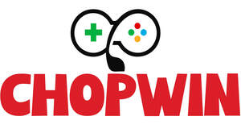

Trade Mark Journal No.2026/009 27 February 2026
UK00004286831 30 October 2025 (9,16,28,35,36,38,41,42,45)
Mark 1
Mark 2

Mark 3
Mark 4
- Class 9
- Downloadable software applications for sports betting, gambling, and wagering; downloadable software for providing access to sports betting and gaming services; downloadable electronic publications in the nature of newsletters, guides, and tips related to sports betting, gambling, and wagering; downloadable audio and video recordings featuring information, commentary, and live broadcasts related to sports betting and wagering; downloadable software for managing, tracking, and analysing sports betting activities; downloadable software for providing sports betting odds and statistical data; electronic betting terminals and kiosks for placing bets on sports and other events; computer hardware and peripherals for use in sports betting, wagering, and gaming operations.
- Class 16
- Printed materials, namely, books, brochures, guides, newsletters, and magazines in the field of sports betting, gambling, and wagering; printed betting slips, betting cards, and prepaid cards for use in sports betting; printed instructional and teaching materials in the field of sports betting, gambling, and wagering; posters, charts, and statistical guides related to sports betting activities and outcomes; tickets, printed cards.
- Class 28
- Chips for gambling; lottery tickets; scratch cards; game cards.
- Class 35
- Advertising, marketing, and promotional services related to sports betting, gambling, and wagering; consultancy and advisory services in the field of business management and strategy for sports betting operations; business data analysis services relating to sports betting; providing statistical information and analysis for business purposes in the field of sports betting; organizing business competitions for promotional purposes, including sports betting contests and tournaments; organisation of incentive schemes; organisation, operation and supervision of customer loyalty schemes; compilation of computer databases; compilation of statistics; compilation of statistics relating to betting, gambling, wagering, sports betting, spread betting and gaming services; provision of online business and commercial information; information, advisory and consultancy services in relation to the aforesaid services.
- Class 36
- Financial transaction services, namely, processing payments and pay-outs related to sports betting and gambling; electronic funds transfer services related to betting transactions; provision of financial information and consultancy services in the field of sports betting; betting-related insurance services; prepaid card services, namely, issuing stored value cards for use in connection with sports betting and wagering; financial management of sports betting operations; Financial services provided via electronic media, the Internet, telecommunications or television; provision of credit card services; financial services relating to betting, gambling, wagering, sports betting, spread betting and gaming; issuing of tokens of value in relation to customer loyalty schemes, incentive schemes and discount schemes; provision of financial information via the Internet, telecommunications or television; information, advisory and consultancy services in relation to the aforesaid services.
- Class 38
- Telecommunication services, namely, providing access to platforms and networks for sports betting and gambling; transmission of sports betting information and data via global computer networks; streaming of audio and video content related to sports betting, including live broadcasts of sporting events with betting features; providing online chatrooms, forums, and messaging services for users to engage in discussions related to sports betting and wagering; providing access to multiple-user network systems allowing access to gaming, competition, sport and betting information and services over the Internet and other global networks; broadcasting and relaying of sports events including racing over the Internet; providing multiple-user access to information and news information over the Internet and other global networks; Broadcasting services relating to betting, gambling, wagering, sports betting, spread betting and gaming; transmission of information over the Internet and other global networks, relating to betting, gambling, wagering, sports betting, spread betting and gaming; information, advisory and consultancy services in relation to the aforesaid services; rental and provision of access time to an electronic database server.
- Class 41
- Betting services, namely, conducting and providing facilities for sports betting, gambling, and wagering, including live, offline, and online betting; entertainment services in the nature of sports betting competitions, contests, and tournaments; providing information and analysis regarding sports betting, odds, and gambling strategies; provision of entertainment in the form of live and virtual events involving sports betting; news, analysis, statistics, and betting odds for sporting events provided via a website and mobile application; fantasy sports leagues, games, and competitions with a focus on sports betting elements; entertainment services, namely, providing virtual sports betting experiences and simulations; online and offline sports betting; Gaming; entertainment; organisation and conducting of competitions; betting; conducting and organising casino games and bingo; wagering on casino games, bingo, sporting events and lotteries; Gambling services; Organization of lotteries; Casino services; Providing casino facilities; Leasing of casino games; Providing amusement arcade services; Video arcade services; Casino, gaming and gambling services; Wagering services; Football pools services; Sporting results services; Bookmaking [turf accountancy]; Provision of online information relating to game players; Racing information services; Online casino services; On-line casino services; Online gambling services; On-line gambling services; Online gaming services; Online sports betting services; On-line gaming services; information, advisory and consultancy services in relation to the aforesaid services.
- Class 42
- Providing online, non-downloadable software for use in sports betting, gambling, and wagering; software as a service (SaaS) services featuring software for facilitating sports betting activities; development and maintenance of sports betting platforms and websites; design and implementation of software solutions for real-time sports betting; providing online non-downloadable software for statistical analysis, odds calculation, and predictive modeling in sports betting; technical consultancy and support services in the field of software for sports betting, gambling, and wagering; hosting of websites and applications for sports betting operators; Computer programming services; software development, updating of computer software, development and maintenance of software and a platform for gaming, entertainment and competitions over the Internet and other global networks; storage space on an electronic database server via electronic media, the Internet and other global networks; design and development of computer software which can be downloaded from a global computer network; Software as a service [SaaS]; Platform as a Service [PaaS]; information, advisory and consultancy services in relation to the aforesaid services.
- Class 45
- Licensing multiple user access to information and news information over the Internet and other global networks; licensing access to multiple user network systems allowing access to gaming, competition, sport and betting information and services over the Internet and other global networks.
Choplife IP Ltd
Representative: JOSHI-IP.LAW